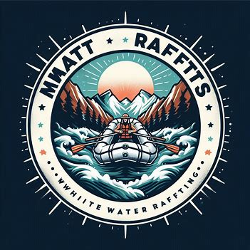

Overview
Purpose
Mat Rafts is dedicated to bringing the thrill and excitement of white water rafting to adventurers of all ages. Our exhilarating trips offer more than just adrenaline-pumping fun — they create unforgettable memories and deepen relationships through teamwork and shared experiences. Whether you’re a family with teens, a group of young adults, or seasoned adventurers, Mat Rafts delivers the ultimate rafting adventure that challenges and connects you like never before.
Audience
Adventure-seekers, families, and young adults ready for thrilling teamwork!
Branding
Website Logo
Style Guide
Color Palette
| Primary | Secondary | Accent 1 | Accent 2 |
|---|---|---|---|
Typography
Heading Font: Poppins
Paragraph Font: Arimo
Normal paragraph example
The best Whitewater Rafting in Colorado, White Water Rafting Company offers rafting on the Colorado and Roaring Fork Rivers in Glenwood Springs. Since 1974, we have been family owned and operated, rafting the Shoshone section of Glenwood Canyon and beyond.
Colored paragraph example
Trips vary from mild and great for families, to trips exclusively for physically fit and experienced rafters. No matter what type of river adventures you are seeking, White Water Rafting Company can make it happen for you.
Navigation with Hover
Site Map
Wireframes
Home